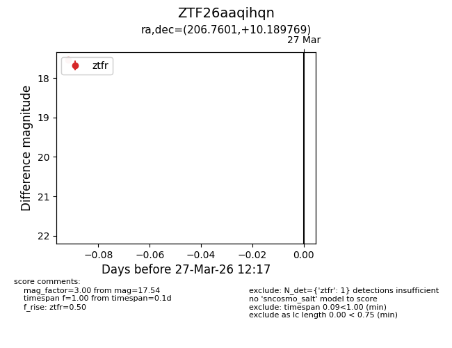
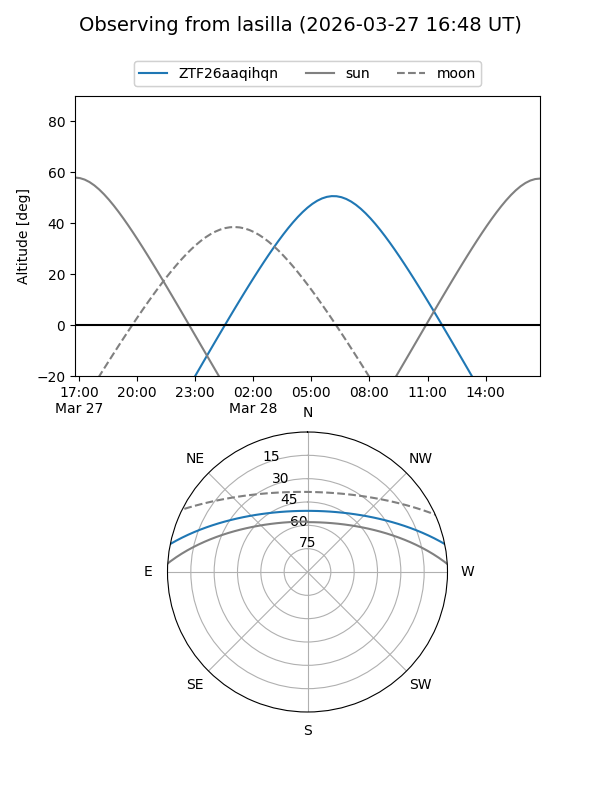
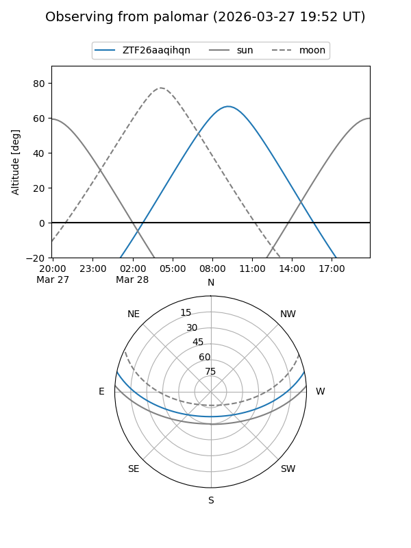

ZTF26aaqihqn
Target ZTF26aaqihqn at 2026-03-27 12:21
Aliases and brokers:
FINK: link
Lasair: link
ALeRCE: link
alt names
ZTF26aaqihqn (ztf,fink_ztf)
Coordinates:
equatorial (ra, dec) = 206.7601,+10.18977
equatorial (HMS+DMS) = 13:47:02.41,+10:11:23.17
galactic (l, b) = (343.2937,+68.58576)
Flags:
Photometry:
last ztfr=17.54
1 ztfr detections
Lightcurve

Visibility


Additional plots